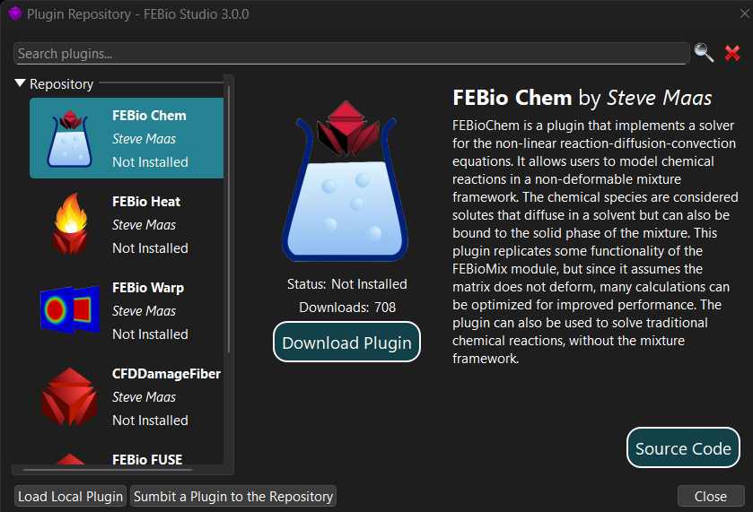
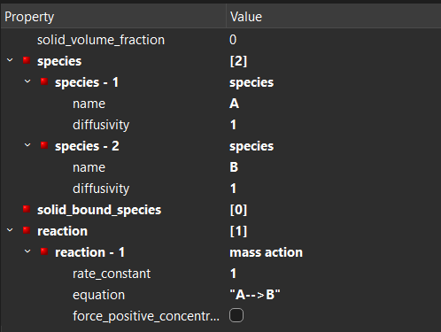

Tutorial 1¶
In this first tutorial, we'll solve a simple 1D reaction-diffusion problem, where two species, \(A\) and \(B\), react via the equation.
The domain will consist of a block of size \(10 \times 1 \times 1\) block. On the left face of the block, a concentration flux of species A will be defined. Both species will be allowed to diffuse.
Prerequisites¶
We'll use the FEBioChem plugin in FEBio Studio. Before we can proceed, make sure that you have FEBio Studio (version 3.0 or above) installed on your computer.
Next, you'll need to install the FEBioChem plugin. This can be done using the Plugin Repository in FEBio Studio. To open the Plugin Repository, use the menu FEBio → Plugin Repository.

Locate the FEBioChem plugin in the list on the left side and click the Download Plugin button.
This will download and install the plugin.
This tutorial will assume some familiarity with FEBioStudio already. If you are completely new to the software, it is advised to start with the introductory tutorials available on the FEBio Knowledgebase.
Model Setup¶
Starting a new model¶
Create a new model using the menu File → New Model.... From the dialog box that appears, select the reaction-diffusion option. Then click OK.
Creating geometry and mesh¶
Select the Create tab on the Build panel and click the Box item. For the parameters, choose,
Width: 10Height: 1Depth: 1
Then click the Create button. This will create a box of the specified dimensions. The box should appear on the screen.

Next, click the Mesh tab on the Build panel. Set the following parameters.
Nx: 100Ny: 1Nz: 1
Leave all other parameters at their default values. Next, click Apply.

Note
Note that we want to solve a 1D problem in this tutorial, but FEBio doesn't support true 1D analyses. FEBio only supports 3D analyses, which is why we create this 3D box. By using unit dimensions in \(y\) and \(z\) and using only single elements along \(x\) we'll be able to emulate a 1D analysis.
Creating the material¶
First, we need to define the two species. Use the menu Physics → Solute Table to open the Solute Table dialog box. (FEBio usually refers to solutes instead of species, but in this case the distinction is not relevant). In this dialog box, click the Add button to a new species. Double-click the item under Name to edit the name. Change it to A. Do the same thing to create species B.
Next, use the menu Physics → New Material... to open the Material dialog box. Select the reaction-diffusion option and click OK. A new (empty) material will appear in the model tree.
Select the value of the species property and change it to 2. Two new entries appear under the species property. Select the value of the first species entry, and from the drop-down menu select the <select> option. From the dialog box that appears, choose Species. New parameters will appear under the species-1 item in the model tree. Set the following parameters:
name: select A from the dropdown boxdiffusivity: 1
Repeat the process for the species-2, but this time choose B for the species name.
Next, we'll add the reaction. Select the value of the reaction property and set it to 1. This adds one reaction to the material.
Then, select the value of reaction-1 and choose <select> from the dropdown. In the dialog box that appears, choose Mass Action. Click OK.
This creates a reaction that follows the law of Mass Action. This reaction requires the following parameters:
rate_constant: 1equation:"A-->B"
This completes the definition of the material.

Finally, we need to assign this material to the box. First select the box by clicking on it in the Graphics View. A white bounding box should appear around the box to indicate that it is selected. To assign the material to the box, click the green plus button in the Selection pane of the Model panel, below the properties list. If the assignment was successful, the box will be colored with the same color that is assigned of the material.
Boundary Conditions¶
We'll apply only one boundary condition, namely an initial concentration flux for species A. Use the menu Physics → Add Surface Load... to open the Add Surface Load dialog box. Select the concentration flux option and click OK. Set the following parameters:
flux: -1solute_id: 1 (A has solute ID 1 since we created it first. B would have ID 2)
To assign this load to the left face of the box, proceed as follows:
- Click the face selection button on the main toolbar above the Graphics View. (looks like a blue surface)
- Click the left face of the box. This is the face perpendicular to the \(-x\) axis. (Should be Surface4.)
- Click the green plus button on the Selection panel under the Model tree. (or use Ctrl+a shortcut).
The load will now be applied to the left side of the box.
Analysis and solver settings¶
To complete the model setup, use the menu Physics → Add Analysis Step to open the Add Analysis dialog box. Just click OK on this dialog box and a new step will be added to the model.
There are quite a few settings, but for this tutorial, we only need to change a few:
analysis:TRANSIENTtime_steps: 100Auto time stepper: (none) (To remove it click thedefaultvalue, and select remove from the dropdown list.)
Note
The auto-time stepper adjusts the time step size automatically depending on how well the model is running. For this simple model it isn't necessary, and removing it simplifies the process of changing time steps or time step sizes.
Output settings¶
We need to decide what we want FEBio to output for our simulation. Right-click on plotfile item under the Output item in the model tree and select Edit output from the popup menu. In the dialog box that appears, check the actual concentration and concentraction flux variables. Then click Save.
This completes the model setup and we are now ready to run the model.
Tip
This is also a good time to save the model if you haven't done so yet.
Running the tutorial¶
FEBioChem models can be run in the same way as any other FEBio model. Click the Run button from the main toolbar, or choose the menu FEBio → Run FEBio.
Make sure to save the model first before you run it.
The default settings should be fine, but make sure to double-check the working directory.
Then, click the Run button.
If all goes well, the model should finish in a few seconds and the Job Summary dialog box appears. Click the button Open Results to view the results in FEBio Studio.
Visualizing the results¶
There are many things to look at, but let's simply visualize the concentrations for the two species. First, select the actual concentration (A) variable from the dropdown list in the main toolbar. This plots the concentration of species A. You can then press the play button or drag the current time step displayed on the Timeline panel to view an animation of how the concentration changes over time. Note that it stabilizes after a short time and reaches its max value of 0.952 on the inlet side. The equilibrium is established once the rate of consumption of A (due to the reaction) balances the concentration influx.
Now plot the actual concentration (B), which displays the concentration of species B. Note that it continues to grow over time and does not stabilize. This is of course to be expected because there are no outflow conditions defined on species B.